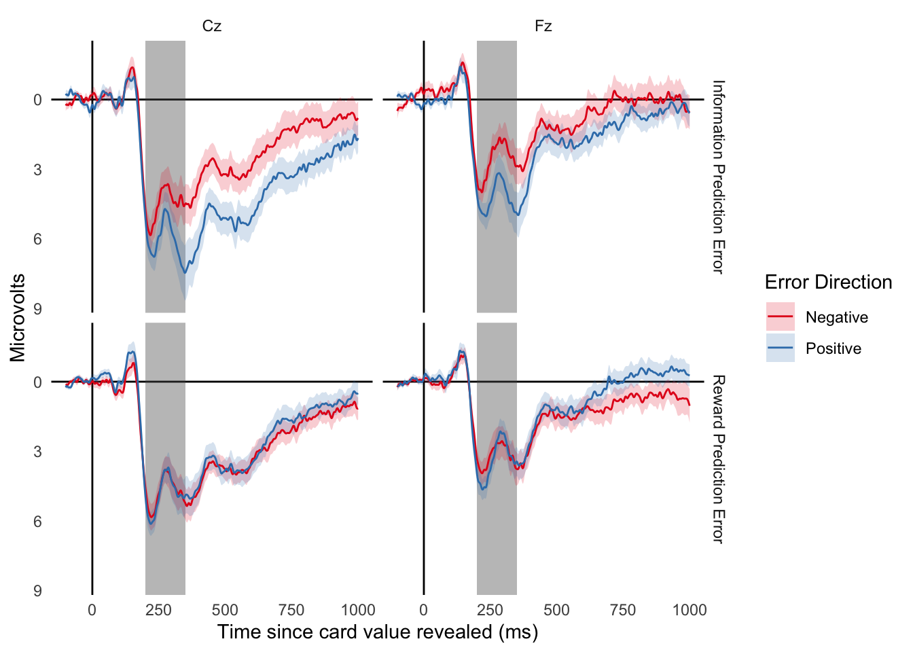

Replication of Brydevall et al. 2018
Methods
Participants
26 Vassar College students participated in this study. All participants were right-handed.
Results
Behavioral
There were five attention check trials, one during each block, throughout the experiment. The mean number of correct responses was 5 (SD = 0) and the average response time was 622ms (SD = 76). As per our pre-registered criteria, we excluded 0 participants for failing more than 2 attention checks (defined as a response time greater than 1,500ms).
EEG
We pre-registered an inclusion criteria that a participant must have at least 20 usable epochs of data of a particular event type in order to be included in the corresponding analyses. The minimum number of usable epochs for the RPE analysis in an individual subject was 9, M=134, SD=37. The minimum number of usable epochs for the IPE analysis in an individual subject was 6, M=73, SD=20. 1 subject was excluded for poor EEG data quality.

| Effect | DFn | DFd | F | p | p<.05 | ges | |
|---|---|---|---|---|---|---|---|
| 2 | electrode | 1 | 22 | 28.674722 | 0.0000224 | * | 0.0936246 |
| 3 | rpe_type | 1 | 22 | 3.549657 | 0.0728414 | 0.0101569 | |
| 4 | electrode:rpe_type | 1 | 22 | 1.429505 | 0.2445740 | 0.0012828 |
| Effect | DFn | DFd | F | p | p<.05 | ges | |
|---|---|---|---|---|---|---|---|
| 2 | electrode | 1 | 22 | 21.4876973 | 0.0001278 | * | 0.0724398 |
| 3 | ipe_type | 1 | 22 | 8.7321370 | 0.0073176 | * | 0.0249933 |
| 4 | electrode:ipe_type | 1 | 22 | 0.0069172 | 0.9344686 | 0.0000051 |